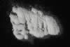

|
|
(For further information on spectroscopy, see:
http://speclab.cr.usgs.gov)
TITLE: Diopside NMNHR18685 DESCRIPT
DOCUMENTATION_FORMAT: MINERAL
SAMPLE_ID: NMNHR18685
MINERAL_TYPE: Inosilicate
MINERAL: Diopside (Pyroxene group)
FORMULA: CaMgSi2O6
FORMULA_HTML: CaMgSi2O6
COLLECTION_LOCALITY: DeKalb, New York
ORIGINAL_DONOR: Smithsonian
CURRENT_SAMPLE_LOCATION: USGS Denver Spectroscopy Laboratory
ULTIMATE_SAMPLE_LOCATION: USGS Denver Spectroscopy Laboratory
SAMPLE_DESCRIPTION:
Forms series with Hedenbergite and with Johannsenite.
"Results of petrographic examination: Most of the sample, which is green and about 13mm x 10mm x 6mm is clean, fresh. There is one area which is eroded and weathered and probably impure. Crushed sample was hand-picked to avoid impurities. There is a moderate amount of weathering and alteration. Alteration is brown in color (limonite?)."
Salisbury, J. W., Walter, L. W., and Vergo, N., 1987, Mid-Infrared (2.1-25µm) Spectra of Minerals: First Edition, U.S. Geological Survey Open File Report 87-263.
IMAGE_OF_SAMPLE:

END_SAMPLE_DESCRIPTION.
XRD_ANALYSIS:
Diopside plus a trace of quartz. Spectra show no quartz bands, but do show a trace of carbonate in reflectance of 74-250µ and 0-74µ size ranges.
Salisbury, J. W., Walter, L. W., and Vergo, N., 1987, Mid-Infrared (2.1-25µm) Spectra of Minerals: First Edition, U.S. Geological Survey Open File Report 87-263.
Diopside + trace quartz (Norma Vergo).
END_XRD_ANALYSIS.
COMPOSITIONAL_ANALYSIS_TYPE: XRF # XRF, EM(WDS), ICP(Trace), WChem
| COMPOSITION KEYWORD |
Oxide ASCII |
Amount | Weight Percent, % |
Oxide html |
|---|---|---|---|---|
| COMPOSITION: | SiO2 | 54.77 | wt% | SiO2 |
| COMPOSITION: | TiO2 | 0.05 | wt% | TiO2 |
| COMPOSITION: | Al2O3 | 0.49 | wt% | Al2O3 |
| COMPOSITION: | FeO | 0.87 | wt% | FeO |
| COMPOSITION: | MnO | 0.06 | wt% | MnO |
| COMPOSITION: | MgO | 18.26 | wt% | MgO |
| COMPOSITION: | CaO | 25.60 | wt% | CaO |
| COMPOSITION: | Na2O | 0.39 | wt% | Na2O |
| COMPOSITION: | K2O | 0.01 | wt% | K2O |
| COMPOSITION: | Total | 100.49 | wt% | |
| COMPOSITION: | O=Cl,F,S | wt% | #correction for Cl, F, S | |
| COMPOSITION: | New Total | wt% |
COMPOSITION_TRACE: None
COMPOSITION_DISCUSSION:
Microprobe analysis showed sample to be homogeneous within and between grains examined. Average of 12 analyses indicates that this sample is close to end member composition.
Salisbury, J. W., Walter, L. W., and Vergo, N., 1987, Mid-Infrared (2.1-25µm) Spectra of Minerals: First Edition, U.S. Geological Survey Open File Report 87-263.
END_COMPOSITION_DISCUSSION.
MICROSCOPIC_EXAMINATION:
Mode:
95 vol% diopside
5 vol% quartz
grain size fraction 74-250 µm: average gr sz = 263 µm
grain size fraction <74 µm: average gr sz = 32 µm
Two cleavages at nearly right angles, inclined extinction. No optical evidence of calcite and no HCl acid fizz in either grain size fraction. G. Swayze.
END_MICROSCOPIC_EXAMINATION.
SPECTROSCOPIC_DISCUSSION:
END_SPECTROSCOPIC_DISCUSSION.
SPECTRAL_PURITY: 1b2c3b4b # 1= 0.2-3, 2= 1.5-6, 3= 6-25, 4= 20-150 microns
| LIB_SPECTRA_HED: | where | Wave Range | Av_Rs_Pwr | Comment |
|---|---|---|---|---|
| LIB_SPECTRA: | splib04a r 1440 | 0.2-3.0µm | 200 | g.s.= 263 µm |
| LIB_SPECTRA: | splib05a r 2428 | 0.2-3.0µm | 200 | g.s.= 263 µm |
| LIB_SPECTRA: | splib06a r 7035 | g.s.= | ||
| LIB_SPECTRA: | splib06a r 7049 | g.s.= |
{kind=link}